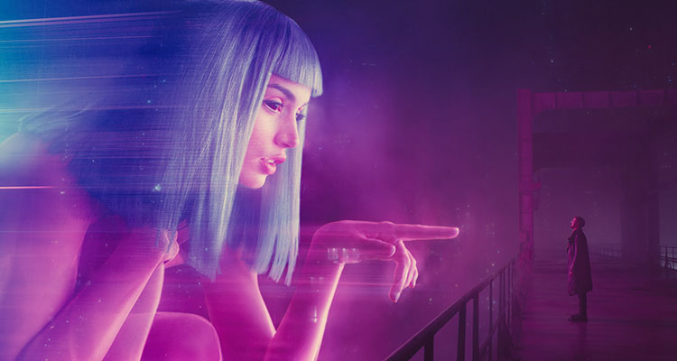

Vítejte na mém webu o filmu Blade Runner 2049
Blade Runner 2049 je americký sci-fi film z roku 2017 režírovaný Denisem Villeneuvem v podobě sequelu ke snímku Blade Runner, jenž byl natočen v roce 1982. Vlastní natáčení bylo zahájeno v červenci 2016 a k září téhož roku pokračovalo v maďarské metropoli Budapešti.
Informace o hercích

Ryan Gosling - důstojník losangeleské policie „K“
Harrison Ford - Rick Deckard
Ana de Armasová - Joi
Jared Leto - Neander Wallace, manipulativní výrobce replikantů
Sylvia Hoeksová - Luv
Obin Wrightová - poručice Joshi
Dave Bautista - Sapper Morton
Edward James Olmos - Gaff
Barkhad Abdi - „zcela pokřivený“ vědec
Mackenzie Davisová - Mariette
Lennie James - Mister Cotton
Carla Juriová - Dr. Ana Stellineová
Hiam Abbassová - Freysa
David Dastmalchian - Coco
Vývoj filmu Blade Runner 2049
Filmový svět Blade Runneru byl dále rozšířen a prohlouben, a to jak z vizuálního, tak z narativního hlediska. "Blade Runner 2049" se věnoval otázkám identity, humanity a významu umělé inteligence ve světě budoucnosti. Odkazoval na témata původního filmu a zároveň přinášel nové vrstvy do příběhu. Po uvedení do kin byl "Blade Runner 2049" oceněn za svou vizuální kvalitu a hloubku příběhu. Hraje významnou roli v tom, jakým způsobem moderní sci-fi filmy zkoumají etické a filozofické otázky spojené s umělou inteligencí a budoucností lidstva.